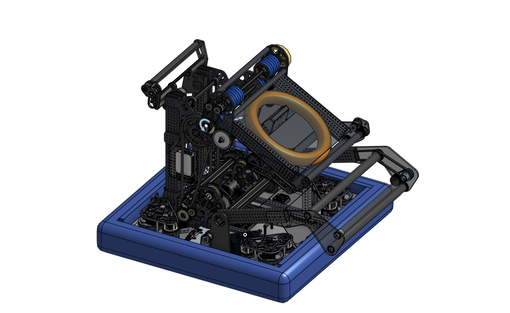

Plate IV
 In Progress
In Progress
Wireless
Fluorimeter Development
Querrey Simpson Institute for Bioelectronics · Northwestern
Undergraduate research assistant on a wireless fluorimeter for continuous fluorescence monitoring in biomedical applications. Flexible PCB assembly and repair, and bench characterization of the fluorescence sensor.
Result: working boards for experimental use, with unit-to-unit variation quantified across assembled boards.
Plate V

CompletedFIRST Robotics
Team #1868
NASA Ames Research Center · Mountain View, CA
Three years on a FIRST Robotics team based at NASA's Ames Research Center. Served as the electrical subteam lead; led full robot wiring architecture, CAD, fabrication. Qualified to FIRST World Championships twice.
Result: two-time FIRST World Championship qualifier as electrical subteam lead.